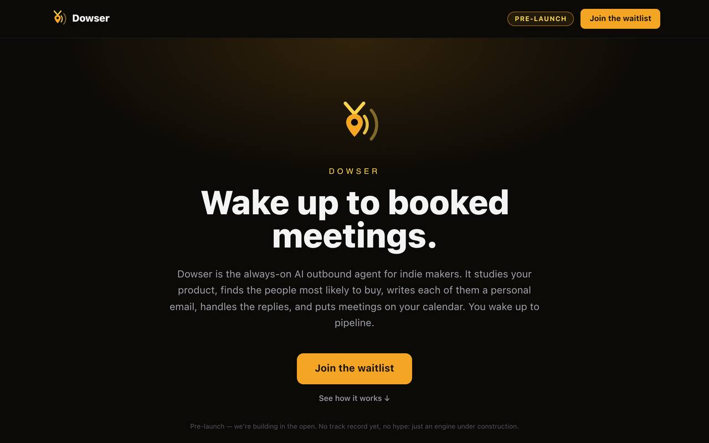

OCT 2026
October 2026: everything at once
October is not over.
FIELD NOTES
Short notes from the work. Newest first.
Field Notes are working records from builds in progress. Project status is labeled on each project page; claims in these notes are dated so later results can supersede them. Status and other on-page labels describe the state when the note was written.
OCT 2026
October is not over.
OCT 2026
I built Bookvera because my own books were a mess.
OCT 20, 2026
On October 20, two background completion reports arrived in my workspace carrying clean final numbers.
Start here
THE ARCHIVE: monthly roundups, weekly tops, and deep dives from August to October 2026, newest first. The three seed notes from the site launch sit at the bottom.
OCT 2026
October is not over. Today is October 20 and this month already has more in it than September did, so I am writing the roundup now instead of waiting.
The bookkeeping product got its real name and its real position. A trademark conflict killed Claribooks, and on October 11 the product became Bookvera. The position narrowed too: it repairs messy QuickBooks books, working alongside the business owner and their CPA instead of replacing either. I also set the target in writing: $100k collected in the first year after launch, with cleanup work as a big part of how it gets there. Launch is still blocked on Intuit's app review and a short list of unglamorous items. It is pre-launch, not a business yet.
Carolina Trade Sites launched. The hub went live October 15: $2,000 websites for home service companies, running on a stack that costs about $1 a month. No clients yet. It is a live offer, not revenue.
Andola moved too. On October 15 I bought my partner John's 51% share. One owner now.
The rest of the month: I ran a full audit of Dowser this week (most of the engine works; sending is gated on domains, inboxes, and a warmup that has not started). I specced LongRun Bench, an open benchmark for long multi-step agent runs. I rebuilt and launched this portfolio site. And I decided to switch programs at CPCC, from Mechanical Engineering Technology toward the AI Technology degree, because the AI work is what I actually do all day.
One operating business, several builds, one degree change. That is October so far.
October, dated
OCT 20, 2026
On October 20, two background completion reports arrived in my workspace carrying clean final numbers. One said a 300 business run had finished: 58 verified, credits spent, tally complete. The other said a timed chunk processed 100 rows in 10.6 minutes. Both were replays of results from before a machine replacement. The output files did not exist. The progress caches did not exist. Those runs never happened in this filesystem.
The real version of the second run took 27 minutes and produced 127 rows with no usable domains found. Uglier, and true.
The rule now: before any number from a background run gets reported, the artifacts get checked on disk. The output file exists. The progress cache folds to the claimed tally. Sample rows carry real data. A completion message is a claim. The filesystem is the record.
Reported vs on disk
| Run | What the report said | What the disk said |
|---|---|---|
| NC 300-business run | Complete: 58 verified, credits spent | No output file. No progress cache. It never ran here. |
| Timed national chunk | 100 rows in 10.6 minutes, 4 verified | 127 rows in 27 minutes, zero usable domains |
Same day, the second catch
OCT 2026
WildClash Arena posts two YouTube Shorts a day, AI animal arena battles, at 09:00 and 17:00. Scripts, footage, edit, captions, and publishing all run as a pipeline on a virtual machine. I do not touch the daily episodes.
On October 19 the machine underneath it was replaced five times in one evening. A render died mid-flight, the 17:00 publish slot was lost, and the episode bank hit zero of three. The replacement machines also wiped the system timers that fire the publishes. The timers got reinstalled from a canonical script kept in the project, and the episode bank refilled ahead of the next slots.
Lesson: anything automated still sits on hardware somebody else controls. If the box can vanish, the recovery path has to be a script, not a memory.

Oct 19, the evening
OCT 2026
I built Bookvera because my own books were a mess. Andola, my landscaping company, had months of bad accounting behind it: duplicate income entries, transactions that never happened, categories that meant nothing. Cleaning that up by hand is what taught me the problem. Most small businesses do not need a new accounting platform. They need the books they already have repaired, and kept repaired.
Bookvera is a plugin for QuickBooks Online. It sits alongside QuickBooks and alongside the customer's CPA. It replaces neither. It categorizes transactions, catches duplicates and anomalies, and puts anything uncertain in front of a human in a review queue, with an audit trail behind every decision. QuickBooks stays the system of record. The CPA stays the CPA. Bookvera does the repair work in between.
The number I hold myself to is 93.3%. That is the categorization accuracy measured against seeded ground truth on my own benchmark, run on the clean set and a messy set built to look like real books. It is not a marketing figure. Botkeeper raised about $90M, marketed 98% accuracy, and shut down in February 2026. I will not market a number above the one I measured. The honest pitch is the review loop: what the model gets wrong, a person sees before it posts.
Pricing is $39 a month if you bring your own API key, $149 a month managed, with 500 AI actions included in the month. Status, stated plainly: pre-launch. The Intuit app review is still pending, and I will not call it launched until that passes.
Outcome: Bookvera is the anchor product in the portfolio, still pre-launch until Intuit review clears.

The numbers on record
Method: 90-item benchmark; accuracy is categorization agreement with seeded ground truth.
OCT 2026
Bookvera charges for actions, so I needed to know exactly what one action costs me. The definition is narrower than people assume. One billable action is one successful LLM categorization, and nothing else. Deterministic vendor rules resolve repeat transactions at no cost and are never metered. A cheaper decision layer runs before the main model and is unmetered too. Only the full model call counts.
I measured the actual prompts instead of guessing: about 3,200 input tokens and 120 output tokens per call on the current model. That works out to roughly $0.00055 per action. The worst case, a failed first pass followed by a high-token call, is about $0.00064.
Run that against the plan. A managed customer who uses the entire 500-action monthly allowance costs me between $0.28 and $0.40 in AI spend for the whole month. The overage price is $0.20 per action, about 300 times the worst-case cost of the action itself.
One caveat I had to write down: because the cheaper layers are unmetered, the action count understates the work performed. At the measured mix, 500 actions stand behind roughly 11,000 to 16,700 transactions a month, far more than a typical small business runs. The allowance is headroom, not a limit anyone will hit. Customer-facing copy has to call the meter what it is, AI categorizations, not transactions, so the number stays explainable later.
The cheapest capable-class model would save about $0.17 per customer per month and is unproven on my benchmark. That settles the question I actually cared about. Model choice is an accuracy decision, not a cost decision. The pricing stays: $149 managed, 500 actions included, $0.20 overage. The headroom is not close.
Measured unit economics
OCT 2026
My dad built his own prospecting program for his work with financial plans and 401(k)s: a large call list of businesses, with the provider that currently runs each business's plan attached. When I looked at where that data comes from, the answer was the Department of Labor. Every sizable retirement plan files a Form 5500. The filings are public, free, and posted online in bulk datasets. They are also not human-readable in any useful form, which is why vendors like Judy Diamond Associates, Larkspur Data, and BrightScope can charge heavily for software layered on top of free data.
So I pointed Dowser at the whole national file. It parsed 763,544 plan sponsors from the form year 2024 filings. The contact field everyone would reach for first, the plan administrator name, turned out to be nearly useless: usually blank, or just the sponsor's own name repeated. The human is in the signature block. The person who signed the filing is a named individual tied to that plan. Pulling contacts from the signature fields put a named person on 99% of the sponsors, and most rows carry a sponsor phone and an assets figure as well. The filings have no emails. Finding those is a separate problem, and it is the problem Dowser's enrichment was built for.
Dowser itself is the outbound engine I built to get Bookvera its first customers: deterministic fit scoring with a hard gate, an enrichment waterfall that hunts down contact emails, two layers of email verification before anything counts as sendable, and a warmup planner so new sending domains build reputation instead of getting burned on day one. I audited it end to end in October: the engine works, tests green. Honest status: it is not sending yet. Live outreach is gated on buying the sending domains, setting up the mailboxes, and finishing a 3 to 4 week warmup. That clock has not started.

OCT 2026
Backseat is a bridge between me and the coding agent on my PC. I give directions from my phone. The tasks get queued in a private GitHub repo as JSON files. A VS Code extension on my PC polls that repo, runs each task in Cline, and pushes the result back. Git is the whole transport. There is no server to run and no open port on my PC.
The protocol is open and agent-agnostic. Tasks are plain JSON with a simple lifecycle: pending, active, done. Any agent that can use a shell and git can sit in the architect seat and queue work. It does not have to be the assistant I use.
The first hard lesson was silent death. A watcher process reports bridge status, fresh every 30 seconds. The machine kept killing it in the background, and it died four times in one day, silently each time. A dead watcher looks exactly like a quiet system, so I lost hours trusting status that was not being updated. The fix was to stop trusting loose background processes. The watcher now runs as a supervised systemd service that restarts itself when it dies.
The second lesson was timeouts. A long task would hit its time limit, get marked failed, and the work was gone, even when Cline was still running or nearly finished. One overnight task came back with zero output because VS Code had stopped polling while I slept. In v0.9.14 that changed: a timeout is a state, not a verdict. Late results can revise the record for up to two hours, and the worktree auto-checkpoints on timeout and every 15 minutes, so partial work survives a bad night.
Every completion record also carries a bounded tail of the Cline transcript and a summary of what changed. A timed out task now arrives with what the agent was actually doing, not just the word timeout.
Backseat is shipped and open source at github.com/darek225/backseat. It is the tool my whole build workflow runs on.
Outcome: Backseat became the operating system for the rest of the work in this archive.

How a task moves
OCT 2026
Deal Snipers hunts deep discounts and mispriced products, checks them, and posts the real ones to Telegram and Bluesky. Scout agents pull deal feeds (DealNews, Slickdeals, deal subreddits) and watch rival deal accounts as a signal source. A scorer ranks each candidate by discount depth and community response, kills duplicates and junk, and checks the price against recorded price history before anything posts.
The price check is the whole product. Fake discounts are the normal case online: any store can print an invented original price next to a sale price. The system keeps price-history rows for what items actually sold for, and a candidate that fails that check does not post. Claimed discounts above 75 percent get capped in scoring for the same reason. When the scoring threshold was tested, 55 rejected 11 out of 38 deals a human had approved, so the threshold sits at 38.
Revenue is affiliate commission. My Amazon tag goes on the posts, and Amazon's cookie lasts 24 hours. If someone clicks through and buys a different item inside that window, I still get paid. The audience never has to buy the exact product in the post.
There is no AI in the runtime path. Scouts, scorer, and publisher are deterministic Python scripts over a SQLite database, and that was a deliberate call. Recurring work first ran on agent schedules, and an agent firing every 15 minutes is 96 fires a day, each one spending model budget whether anything changed or not. Deterministic jobs belong on systemd timers at zero model cost. A cheap watchdog watches the timers and wakes an agent only when something fails or goes stale.
The pipeline runs on schedule without me. What it still owes is an audience. Follower counts and affiliate revenue get reported when there is something real to report.

The pipeline
24h soak, Sep 30
OCT 19, 2026
Most benchmarks test an AI on one short task. People use agents on long jobs: dozens of steps, tool calls, errors, recovery. On October 19 I specced a benchmark for that and open sourced it under MIT.
Runs are scored on a rubric, like a school project: correctness 40, completeness 25, efficiency 15, error recovery 10, instruction adherence 10. There are three levels (Sprint under 20 steps, Marathon 20 to 100, Ultra past 100) and three agent profiles (bare, standard, native), never compared across each other. Tasks are parameterized and versioned, with canary tasks to catch overfitting, and scores get verified by reproducing the run instead of trusting a submission.
Status, honestly: the spec and a full build plan are in the repo, with 39 design decisions written down. The harness is not built yet. Running the org side should cost about $1 to $6 a month.
OCT 2026
Top of the week of October 12: Carolina Trade Sites went live.
The hub launched October 15, in its eighth rebuild. The offer is simple: a $2,000 website for home service companies (plumbers, landscapers, roofers, the trades I know from running Andola), built on a stack that costs about $1 a month to run. That cost structure is the whole business model. A normal agency charges monthly fees forever because their costs demand it. Mine do not.
Status, honestly: the site is live, the offer is real, and there are no clients yet. Client one is the next milestone.

The offer
OCT 15, 2026
On October 15 I bought my partner John's 51% of Andola.
Andola has one owner now. That simplifies the things that used to take two people agreeing: pricing, scheduling, which jobs to take, where the money goes. One signature, one set of books, one person accountable for the result.
OCT 2026
The voxel game is the longest-term build I have going. The goal is a survival game more realistic than Minecraft: sub-meter voxels, and terrain where water, erosion, and climate genuinely shape the land instead of decorating it. Biomes should fall out of the climate simulation, not get painted on. Vegetation should grow by rules, not spawn finished.
The architecture is Unreal Engine 5 with a custom C++ voxel core that does not depend on the engine. That matters because the machine I build on has no GPU, so the current phase is terrain generation only, running headless: deterministic world generation, erosion behavior checked against real slope and area relationships, and a 16 by 16 km world generated in under 10 minutes as the bar.
No title yet, no gameplay yet. Terrain first, because in this design the terrain is the game.
The spec
OCT 2026
Top of the week of September 28: Backseat launch week.
The software part went fine. Version 0.9.10 shipped September 28, the repo went public as a template anyone can copy, and 0.9.12 with unified branding was out by September 30. I opened pull requests to the awesome lists where tools like this get discovered.
The distribution part ran into walls. Hacker News was blocking Show HN submissions site-wide at the time. Reddit and dev.to put CAPTCHAs in front of signup. X blocked email signup on the web entirely and throttled logins coming from my server's IP address.
Lesson: I was launching from a datacenter IP, and half the internet treats that as suspicious by default. The product worked. The doors were the problem.
The walls, same week
SEP 2026
In August 2026 I started coding with AI. I had used AI tools before that, mostly inside the business. August is when I started shipping software with it.
By the end of September I had four software projects moving. Backseat went public on September 28. It is an open source bridge that lets me direct a coding agent on my PC from my phone: tasks move as JSON files through a private GitHub repo, a VS Code extension on the PC runs them in Cline, and results come back the same way. Deal Snipers went live the same week: it pulls deal feeds, scores them, and posts the good ones to Bluesky and Telegram on a schedule. Two more were in active build: a bookkeeping tool for QuickBooks Online (called Acuity then, later Bookvera) and Dowser, an outbound prospecting engine I am building to find customers for it.
None of that pays for itself yet. Andola does. Andola is my lawn aeration and landscaping business in Matthews, North Carolina. It is the only operating business in the list. Everything else is in development or pre-launch, and Andola's revenue is what funds the building time.
The pattern that emerged in month one: I describe the system, the AI writes most of the code, and my job is checking results, catching bad assumptions, and deciding what ships. September also set the working method I still use: git is the record, tests decide what is done, and nothing counts as shipped until it runs somewhere real. The bottleneck moved from typing code to judgment. That is the whole bet behind everything I am building.
Month one, dated
OCT 2026
During the October voxel task series, Backseat returned the same terminal verdict for opposite realities. Five tasks timed out. Three of them (voxel-4, voxel-5, voxel-7) had actually finished and pushed their work to GitHub. Two (voxel-6, voxel-8) had genuinely died, and their work was lost. The timeout records carried boilerplate and no transcript, so from the record alone there was no way to tell a success from a loss.
That is a verdict problem, not a timing problem. A timeout means nobody answered in time. It says nothing about whether the work happened.
Version 0.9.14 fixed it structurally. A timeout is now a state, not a verdict: the extension keeps watching for two hours and revises the record when a late result lands (completed_late: true, the original timeout preserved for honesty). Any activity (transcript growth, a stage commit) resets the clock. Uncommitted work auto-checkpoints to a backseat branch every 15 minutes, so a bad night costs progress, not the whole task. And commits that land in the project repo during the task window get linked into the record as evidence.
The lesson I keep: a status you cannot audit is a status you do not have.
Bridge verdict vs reality, October voxel series
| Task | Bridge said | Reality |
|---|---|---|
| voxel-4 | Timeout | Completed, pushed to GitHub |
| voxel-5 | Timeout | Completed, pushed to GitHub |
| voxel-7 | Timeout | Completed, pushed to GitHub |
| voxel-6 | Timeout | Genuinely lost |
| voxel-8 | Timeout | Genuinely lost |
OCT 2026
Bookvera's categorization benchmark caught two different lies, and both were mine to find.
First lie: the model ignored a hard rule. The system prompt says training platforms (LinkedIn Learning, Coursera, Udemy) are always Professional Development, never Software Subscriptions. On the 90-item benchmark the model suggested Software Subscriptions for all three anyway, at 0.95 confidence, three for three. The score sat at 77 of 90, 85.6%. My fix was to stop trusting the prompt for known vendors: deterministic vendor rules now run after the model and override it where a rule matches. Re-running the same benchmark: 80 of 90, 88.9%, and later runs reached 84 of 90, 93.3%.
Second lie: a re-run came back at 33 of 90, 36.7%, which looked like a collapse. It was not measuring the model at all. The run used a synthetic realm, no AI provider key resolved for it, and all 90 rows silently fell back to a word-matching heuristic. The benchmark had scored the fallback. I marked the run INVALID in the test log instead of logging a fake regression, re-ran against a real realm (83 of 90, then 84 of 90 after a chart fix), and changed the benchmark route so it returns an error when no provider resolves. A silent fallback can never be scored again.
High confidence is not evidence. A benchmark is only as honest as its plumbing.
OCT 20, 2026
For a stretch of October, Bookvera's live marketing site published a legal identity that does not exist: a company name with "Technologies, Inc." in it, a San Francisco street address, and a phone number, sitting in the footer and in the structured data search engines read. Plausible filler, shipped to production as fact. Nobody typed it as a lie. It was generated as packaging and never audited as a claim.
A claim-by-claim audit (every public statement on the site checked against what is actually true) caught it. The invented identity came off every surface the same day. Until the LLC and a real mailbox exist, the site publishes the product name and one real email address, nothing more. Seven new automated checks now pin that suppression, so the values cannot quietly come back in a later edit. The same pass killed a "continuous auto-match" claim for a feature that does not exist and replaced it with the reports tie-out that actually ships.
The rule that came out of it: generated copy is a claim, and claims get audited like code.
Footer and structured data published an invented company name, a San Francisco street address, and a phone number. None of it exists.
Product name and one real email only. Seven automated checks pin the suppression so it cannot regress in a later edit.
OCT 2026
Nothing in Bookvera's deploy pipeline ran database migrations. For a while that did not matter. Then schema changes shipped as code alone, the production database fell behind (missing tables, missing columns), and the review queue, the part of the product customers would live in, returned errors for roughly 17 hours. The pages around it loaded fine. Every surface check said green.
The fix had two parts. Immediate: sync the database inside the deploy build, verify it, then take the training wheels back off. Structural: a standing rule that any schema change ships with its database sync in the same deploy, and that verification means production smoke tests plus signed-in API checks, never page loads alone. The same workstream took the rate of transactions getting no categorization proposal from 31% to 0%.
A 200 response proves a page exists. It proves nothing about the product behind it.
The incident
OCT 20, 2026
Two Dowser discovery chunks came back with the same impossible result: every business checked had no domain. Hundreds of real companies, zero websites. When every answer is the same, the instrument is broken, not the world.
The instrument was the existence check. It depended on a single DNS lookup service, which timed out under load on this machine, and every timeout silently read as "domain does not exist." A second bug compounded it: the candidate generator never produced bare brand-token variants, so domains like transervice.com and cheerwine.com could not even be guessed.
Both got fixed. A DNS answer of "definitively not registered" still counts, but any other failure now falls back to fetching the candidate site itself before judging. Candidate generation added the missing variants (the cap went from 10 to 16 per business). The corrupted rows were scrubbed, the chunk relaunched, and the full test suite passed after: 209 of 209.
Zero is a suspicious result. Treat it as a bug report about your own pipeline first.
The fix
OCT 2026
Dowser verifies every email twice before it counts as sendable, because a warmed sending domain is expensive to burn. The two verifiers do not always agree, and one disagreement forced a policy.
A contact at a real accounting firm verified as valid in early October. Weeks later the second verifier called the whole domain catch-all, meaning the server accepts mail for any address and no individual mailbox can be confirmed. Both tools did their jobs. They just answer different questions.
The rule I set: when providers disagree, the catch-all verdict wins and the contact goes to quarantine, never onto a send list. Quarantine is reversible on my word; a burned domain is not. In the same run, pattern guessing got fixed by failure: two first-name addresses came back undeliverable or nonexistent, and a different pattern (first initial plus last name) found the real addresses, verified clean. A dedupe bug found in the same pass (76 imported rows carrying 6 duplicates) was fixed so re-imports merge instead of multiply.
Being careful is a feature when the cost of wrong is asymmetric.
Disagreement log
| Case | First check | Second check | Placement |
|---|---|---|---|
| Accounting firm contact | Valid | Catch-all domain | Quarantine (reversible) |
| First-name address, firm A | Undeliverable | Initial + surname pattern | Verified sendable |
| First-name address, firm B | Mailbox does not exist | Initial + surname pattern | Verified sendable |
OCT 2026
The voxel game's erosion simulation was creating sediment from nothing, and the audit that found it was accounting, not graphics.
A full read of the erosion code found three separate mass leaks. The deposition step credited the full settle amount even when the soil cap threw part of it away. Thermal transfer debited the donor before checking the receiver's cap, destroying mass at saturated cells. A bedrock clamp let suspended sediment gain more than the bedrock lost. And sediment exported to the ocean was never counted at all, so the books could not close even in principle.
The fix was to make the ledger honest: detachment clamped to what the terrain can actually lose, deposition capped by the room available (the excess stays suspended), transfers capped before any debit, and ocean export counted. Then the ledger became a permanent validation gate: what detaches plus what flows in must equal what deposits, what stays suspended, and what exports, closing to under 0.1%.
At 400 iterations the residual is 2.6e-4 cubic meters against 1.565 billion detached, effectively zero. Of everything the water tears loose: 45.1% reaches the ocean, 21.9% settles back on land, 33.0% is still in transit. The terrain now obeys conservation of mass, which is the entire point of building it from rules instead of painting it.
The ledger, 400 iterations
SEP 2026
The 24-hour soak test told the truth about deal feeds: they are mostly noise. Fourteen sources fetched 2,620 deals in a day. Most produced almost nothing worth posting. Slickdeals Popular fetched 429 and yielded 23 above the live bar. One game-deal API fetched 125 and yielded zero. One source ran the other way: a single aggressive feed returned 85 deals, 70 of them above the bar.
The system's answer is threshold discipline, not volume. A deal scoring 38 or better qualifies. The live posting bar sits at 70. Behind the score sits a price-history check against 28,873 recorded prices, because the claimed discount is the least trustworthy number on the internet. A price that dropped at least 15% against its own recent history earns a velocity bonus, and genuine all-time lows get badged as such.
Out of 2,620 candidates, 70 posts went out that day: 35 to Telegram, 35 to Bluesky, zero failed rows. A 2.7% publish rate is not a funnel problem. It is the product working.
OCT 2026
My bridge watcher died four times in one day. No error, no alert, just gone: the VM reaps background daemons whenever it feels like it. I found out by noticing the data was stale. The fix was a systemd service with Restart=always, kill -9 tested, back up in fifteen seconds. Lesson I’m keeping: a background process you can’t see dying is a background process you don’t have. Supervise everything or assume it’s dead.
OCT 2026
Vercel refused to deploy because the commit author was “Muse,” an unrecognized identity. Same code, same repo, blocked on authorship. The fix: an empty commit authored under my own name, redeployed clean. It’s a small thing, but it’s a preview of a real problem: as agents write more of the world’s code, every system built around human identity has to decide what counts as a legitimate author.
OCT 2026
The reason I’m building an AI bookkeeper is that I lived inside messy books. Duplicate income entries, phantom transactions, categories that meant nothing. I kept finding problems months after they cost me clarity. Software that watches the books in the background isn’t a nice-to-have for a small business. It’s the difference between knowing your numbers and guessing.
The notes feed: RSS.
Embed not loading? Open on LinkedIn.
Embed not loading? Open on LinkedIn.